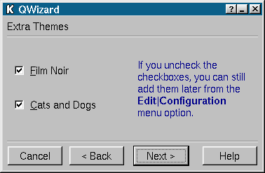

QWizard Class Reference
The QWizard class provides a framework for wizard dialogs.
More...
#include <qwizard.h>
Inherits QDialog.
List of all member functions.
Public Members
Public Slots
- virtual void setBackEnabled ( QWidget * page, bool enable )
- virtual void setNextEnabled ( QWidget * page, bool enable )
- virtual void setFinishEnabled ( QWidget * page, bool enable )
- virtual void setHelpEnabled ( QWidget * page, bool enable )
- virtual void setFinish ( QWidget *, bool ) (obsolete)
Signals
Properties
- QFont titleFont - the font used for page titles
Protected Members
Protected Slots
- virtual void back ()
- virtual void next ()
- virtual void help ()
Detailed Description
The QWizard class provides a framework for wizard dialogs.
A wizard is a special type of input dialog that consists of a
sequence of dialog pages. A wizard's purpose is to walk the user
through a process step by step. Wizards are useful for complex or
infrequently occurring tasks that people may find difficult to
learn or do.
QWizard provides page titles and displays Next, Back, Finish,
Cancel, and Help push buttons, as appropriate to the current
position in the page sequence. These buttons can be
enabled/disabled using setBackEnabled(), setNextEnabled(),
setFinishEnabled() and setHelpEnabled().
Create and populate dialog pages that inherit from QWidget and add
them to the wizard using addPage(). Use insertPage() to add a
dialog page at a certain position in the page sequence. Use
removePage() to remove a page from the page sequence.
Use currentPage() to retrieve a pointer to the currently displayed
page. page() returns a pointer to the page at a certain position
in the page sequence.
Use pageCount() to retrieve the total number of pages in the page
sequence. indexOf() will return the index of a page in the page
sequence.
QWizard provides functionality to mark pages as appropriate (or
not) in the current context with setAppropriate(). The idea is
that a page may be irrelevant and should be skipped depending on
the data entered by the user on a preceding page.
It is generally considered good design to provide a greater number
of simple pages with fewer choices rather than a smaller number of
complex pages.
Example code is available here: wizard/wizard.cpp wizard/wizard.h
 A QWizard page
See also Abstract Widget Classes, Dialog Classes, and Organizers.
Member Function Documentation
QWizard::QWizard ( QWidget * parent = 0, const char * name = 0, bool modal = FALSE, WFlags f = 0 )
Constructs an empty wizard dialog. The parent, name, modal and f arguments are passed to the QDialog constructor.
QWizard::~QWizard ()
Destroys the object and frees any allocated resources, including
all pages and controllers.
void QWizard::addPage ( QWidget * page, const QString & title ) [virtual]
Adds page to the end of the page sequence, with the title, title.
bool QWizard::appropriate ( QWidget * page ) const [virtual]
Called when the Next button is clicked; this virtual function
returns TRUE if page is relevant for display in the current
context; otherwise it is ignored by QWizard and returns FALSE. The
default implementation returns the value set using
setAppropriate(). The ultimate default is TRUE.
Warning: The last page of the wizard will be displayed if no page
is relevant in the current context.
void QWizard::back () [virtual protected slot]
Called when the user clicks the Back button; this function shows
the preceding relevant page in the sequence.
See also appropriate().
QPushButton * QWizard::backButton () const
Returns a pointer to the dialog's Back button
By default, this button is connected to the back() slot, which is
virtual so you can reimplement it in a QWizard subclass. Use
setBackEnabled() to enable/disable this button.
QPushButton * QWizard::cancelButton () const
Returns a pointer to the dialog's Cancel button
By default, this button is connected to the QDialog::reject()
slot, which is virtual so you can reimplement it in a QWizard
subclass.
QWidget * QWizard::currentPage () const
Returns a pointer to the current page in the sequence. Although
the wizard does its best to make sure that this value is never 0,
it can be if you try hard enough.
QPushButton * QWizard::finishButton () const
Returns a pointer to the dialog's Finish button
By default, this button is connected to the QDialog::accept()
slot, which is virtual so you can reimplement it in a QWizard
subclass. Use setFinishEnabled() to enable/disable this button.
void QWizard::help () [virtual protected slot]
Called when the user clicks the Help button, this function emits
the helpClicked() signal.
QPushButton * QWizard::helpButton () const
Returns a pointer to the dialog's Help button
By default, this button is connected to the help() slot, which is
virtual so you can reimplement it in a QWizard subclass. Use
setHelpEnabled() to enable/disable this button.
void QWizard::helpClicked () [signal]
This signal is emitted when the user clicks on the Help button.
int QWizard::indexOf ( QWidget * page ) const
Returns the position of page page. If the page is not part of
the wizard -1 is returned.
void QWizard::insertPage ( QWidget * page, const QString & title, int index ) [virtual]
Inserts page at position index into the page sequence, with
title title. If index is -1, the page will be appended to
the end of the wizard's page sequence.
void QWizard::layOutButtonRow ( QHBoxLayout * layout ) [virtual protected]
This virtual function is responsible for adding the buttons below
the bottom divider.
layout is the horizontal layout of the entire wizard.
void QWizard::layOutTitleRow ( QHBoxLayout * layout, const QString & title ) [virtual protected]
This virtual function is responsible for laying out the title row.
layout is the horizontal layout for the wizard, and title is the title for this page. This function is called every
time title changes.
void QWizard::next () [virtual protected slot]
Called when the user clicks the Next button, this function shows
the next relevant page in the sequence.
See also appropriate().
QPushButton * QWizard::nextButton () const
Returns a pointer to the dialog's Next button
By default, this button is connected to the next() slot, which is
virtual so you can reimplement it in a QWizard subclass. Use
setNextEnabled() to enable/disable this button.
QWidget * QWizard::page ( int index ) const
Returns a pointer to the page at position index in the
sequence, or 0 if index is out of range. The first page has
index 0.
int QWizard::pageCount () const
Returns the number of pages in the wizard.
void QWizard::removePage ( QWidget * page ) [virtual]
Removes page from the page sequence but does not delete the
page. If page is currently being displayed, QWizard will
display the page that precedes it, or the first page if this was
the first page.
void QWizard::selected ( const QString & ) [signal]
This signal is emitted when the current page changes. The
parameter contains the title of the selected page.
void QWizard::setAppropriate ( QWidget * page, bool appropriate ) [virtual]
If appropriate is TRUE then page page is considered relevant
in the current context and should be displayed in the page
sequence; otherwise page should not be displayed in the page
sequence.
See also appropriate().
void QWizard::setBackEnabled ( QWidget * page, bool enable ) [virtual slot]
If enable is TRUE, page page has a Back button; otherwise page has no Back button. By default all pages have this button.
void QWizard::setFinish ( QWidget *, bool ) [virtual slot]
This function is obsolete. It is provided to keep old source working. We strongly advise against using it in new code.
Use setFinishEnabled instead
void QWizard::setFinishEnabled ( QWidget * page, bool enable ) [virtual slot]
If enable is TRUE, page page has a Finish button; otherwise
page has no Finish button. By default no page has this
button.
void QWizard::setHelpEnabled ( QWidget * page, bool enable ) [virtual slot]
If enable is TRUE, page page has a Help button; otherwise page has no Help button. By default all pages have this button.
void QWizard::setNextEnabled ( QWidget * page, bool enable ) [virtual slot]
If enable is TRUE, page page has a Next button; otherwise
the Next button on page is disabled. By default all pages have
this button.
void QWizard::setTitle ( QWidget * page, const QString & title )
Sets the title for page page to title.
void QWizard::setTitleFont ( const QFont & )
Sets the font used for page titles.
See the "titleFont" property for details.
void QWizard::showPage ( QWidget * page ) [virtual]
Makes page the current page and emits the selected() signal.
This virtual function is called whenever a different page is to
be shown, including the first time the QWizard is shown.
By reimplementing it (and calling QWizard::showPage()),
you can prepare each page prior to it being shown.
Examples: distributor/distributor.ui.h and wizard/wizard.cpp.
QString QWizard::title ( QWidget * page ) const
Returns the title of page page.
QFont QWizard::titleFont () const
Returns the font used for page titles.
See the "titleFont" property for details.
Property Documentation
This property holds the font used for page titles.
The default is QApplication::font().
Set this property's value with setTitleFont() and get this property's value with titleFont().
This file is part of the Qt toolkit.
Copyright © 1995-2007
Trolltech. All Rights Reserved.